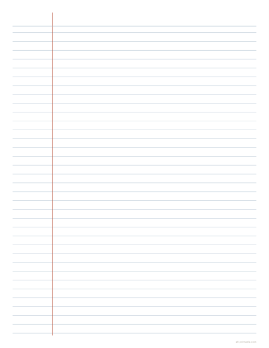

Wide, college and narrow rule at their real spacings — 8.7 mm, 7.1 mm and 6.4 mm — rather than an approximation that looks about right on screen.
Open the maker Free · no sign-up · nothing uploaded

| Wide rule | 8.7 mm |
|---|---|
| College rule | 7.1 mm |
| Narrow rule | 6.4 mm |
Choose Print, then pick Save as PDF as the destination if you want a file. Set scale to 100% and margins to None — the sheet already carries its exact paper size, so the browser must not rescale it. Anything else and the dimensions you chose are no longer the dimensions on the page.
7.1 mm between lines — narrower than wide rule, which is 8.7 mm.
Yes. Left, both sides or none.